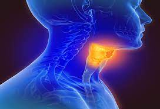

Laryngeal Cancer

CAUSES
Researchers don’t know what causes laryngeal cancer. But if you have risk factors such as tobacco or alcohol use, you have a much higher chance of developing laryngeal cancer.
Some forms of HPV (human papillomavirus), a sexually transmitted disease, can cause laryngeal cancer.
SYMPTOMS
It’s easy to mistake symptoms of laryngeal cancer for other conditions. If you experience these symptoms, talk to your healthcare provider for an accurate diagnosis:
- Sore throat or cough that doesn’t go away.
-
Voice change, such as hoarseness, that doesn’t improve after two weeks.
-
Pain or other difficulties when you swallow.
-
Lump in the neck or throat.
-
Dysphonia, trouble making voice sounds.
-
Ear pain.
DIAGNOSIS
Diagnostic tests include:
- Imaging scans: CT or MRI scans provide detailed images of the body. A chest X-ray can see if cancer has spread to the lungs.
-
Laryngoscopy: Your provider uses a thin, lighted tube called an endoscope to examine your larynx.
-
PET scan: During a PET scan, a provider injects a small, safe dose of a radioactive substance into your vein. The substance highlights abnormal areas. A PET scanner machine creates 3D pictures from the energy the substance gives off.
-
Biopsy: During a biopsy, your provider removes a small piece of any abnormal tissue in the larynx to examine under a microscope.
TREATMENTS
Treatment for laryngeal cancer includes:
- Radiation therapy: Radiation oncologists deliver high-energy radiation beams to kill cancer cells. The radiation targets only the tumor to minimize damage to the surrounding healthy tissue.
-
Chemotherapy: Medical oncologists use medications to kill or slow the growth of cancer cells. People often get chemotherapy intravenously (through a vein). Chemo can cause side effects during treatment.
-
Immunotherapy: This treatment uses your immune system, your body’s natural defenses, to help fight cancer. Immunotherapy is also called biologic therapy.
-
Surgery: For early laryngeal cancer, surgery can remove the tumor while preserving the larynx (and the ability to speak and swallow). For advanced cancer, surgeons often need to do a laryngectomy, removing the entire larynx.